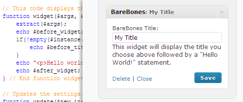
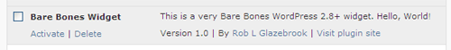
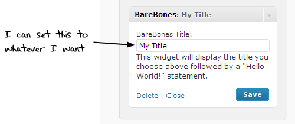

This tutorial is going to be a little more advanced than some of the fare around here, but in the end you’ll have all the information you need to know to create your very own WordPress widget! And that’s worth the effort, I think. However, you will need to understand a little bit of PHP for this to make much sense.
Widgets — essentially fancy drag-and-drop plugins, commonly used in sidebars — have existed in WordPress for quite some time, but with the release of WordPress 2.8, developers have a brand new widget API that makes creating widgets for WordPress a little bit easier. This tutorial will use the new system for developing our barebones “Hello World” widget.
Download the zipped source code here.
I should also note up front that this isn’t the only way to build a widget. This is simply the way I have learned, and a way that is compatible with the new WordPress 2.8+ widget API.
Make the Widget Appear
There are two things you need to do in ~any~ WordPress plugin, including widgets, to make it appear in your WordPress admin:
- Give it a descriptive naming comment at the top, and
- Drop it into the /wp-content/plugins/ directory.
Since we’re worried about the code here, let’s start with the naming comment.
<?php
/*
Plugin Name: Bare Bones Widget
Plugin URI: http://www.cssnewbie.com/build-a-bare-bones-wordpress-2-8-widget/
Description: This is a very Bare Bones WordPress 2.8+ widget. Hello, World!
Author: Rob L Glazebrook
Version: 1.0
Author URI: http://www.cssnewbie.com/
*/
?>
Open any WordPress plugin, and you’ll see something very much like this at the top. The comment tells WordPress the name of the plugin, as well as who built it, where it can be downloaded, what version it is, and more. Note that all widgets are plugins, but not all plugins are widgets.
Many people also put copyright, GPL or MIT license information up here, but I’ve chosen to leave that out. Modify this to suit your specific needs.
Technically, this is all you need to make the plugin appear in your WordPress “Manage Plugins” list. But it won’t do anything until we give it some functionality!

Extending the WordPress Widget Class
WordPress 2.8 gives us a PHP class called WP_Widget that we can extend. This makes our development faster and keeps things somewhat consistent from place to place. The basic structure we’re going to use looks like this:
class WP_Widget_BareBones extends WP_Widget {
function WP_Widget_BareBones() {
// Construct goes here.
}
function widget($args, $instance) {
// Our Widget Function
}
function update($new_instance, $old_instance) {
// Our Update Function
}
function form($instance) {
// Our Form Function
}
}
add_action('widgets_init', create_function('', 'return register_widget("WP_Widget_BareBones");'));
We’re creating a PHP class for our widget that extends the base WP_Widget class. The class contains four functions:
- WP_Widget_BareBones. You can call this whatever you want. It’s what tells WordPress what your widget is called in the program and loads all of our options when the time comes. It’s commonly referred to as the “construct” function.
- widget. This, along with the next two functions, is a standard name that should not be changed. We’re overwriting a default class in WP_Widget with our own information. This one displays the widget on the screen when the widget is activated.
- update. This saves our information when a change is made in the WordPress “Widgets” admin.
- form. This generates the form we use to make changes in the “Widgets” admin.
The final line at the end, add_action, is loading our widget into the widgets_init list, which is called by WordPress when it’s ready to load all of the activated widgets. Without this, your widget will never show up on the page, so make sure it’s there!
Now let’s go through these functions one by one and fill them in.
The Construct
This is the function that pulls everything together and makes it work. Ours will look like this:
// The widget construct. Mumbo-jumbo that loads our code.
function WP_Widget_BareBones() {
$widget_ops = array( 'classname' => 'widget_BareBones', 'description' => __( "A BareBones Widget" ) );
$this->WP_Widget('bareBones', __('BareBones'), $widget_ops);
} // End function WP_Widget_BareBones
To be perfectly honest, this is the part that I understand least of all, but it works pretty much like this:
- The $widget_ops variable gets loaded with an array that contains our widget classname (which has to be unique from all other widgets) and a brief description, which is used in the Widget display.
- The second (and final!) line creates an instance of our widget, and loads it with the options array.
Clear as mud? No worries: this is all you need to do in this section. If you’re creating a widget of your own, just replace the “BareBones” stuff with whatever you want to call your widget, and then give it a description that makes sense for your application.
The Widget Function
The widget function is what creates our widget and outputs it to the screen. It pulls in two variables which are automatically provided by piggybacking onto the WP_Widgets class.
$args contains a list of standard widget variables — specifically, what should be displayed before and after your widget, and what to put before and after the widget title. These variables can be customized by individual WordPress themes, so it’s polite (and common practice) to include them.
$instance is a cool addition to widgets in WordPress 2.8+. Previously, you could only have a single copy of any widget running at any one time. But now we can have several instances (think: copies) of a widget running at once. And the $instance variable lets WordPress keep track of which copy we’re working with at any moment. It is an associative array that stores all of our widget-specific settings, which we set via the form function later.
Our code looks like this:
// This code displays the widget on the screen.
function widget($args, $instance) {
extract($args);
echo $before_widget;
if(!empty($instance['title'])) {
echo $before_title . $instance['title'] . $after_title;
}
echo "<p>Hello world!</p>";
echo $after_widget;
} // End function widget.
First we’re using the extract() function to create the more recognized $args variables: $before_widget, $after_widget, $before_title, and $after_title. If you’ve ever done any WordPress template building, you’ve probably seen these before in the functions.php file.
Next, all we’re doing is echoing stuff to the screen. We echo $before_widget, then check to see if this instance of our widget has a title set. If so, we echo $before_title, our title, then $after_title. Then we echo a paragraph that says, “Hello world!” And we close by echoing $after_widget.
The Update Function
This function is used to save our widget information to the database. Every time someone goes into the Widget screen in WordPress and changes some options, this function will be called. Our is extremely simple:
// Updates the settings.
function update($new_instance, $old_instance) {
return $new_instance;
} // End function update
As you can see, we get two variables to work with:
- $new_instance, which contains all of our new information about this particular instance of the widget, and
- $old_instance, which contains all of the previously saved widget information.
If we wanted to, we could write a bunch of code in here to make sure our variables are sanitary before writing them to the database, check them against the old variables, and whatever. All we’re doing here is returning the new information, which saves it to the database.
The Form Function
This form creates our widget administration panel on the Widget page in the WordPress control panel. We’re only going to have one editable option, the title, in this example. Complex widgets often have dozens of options, but once you see how to do one, the others should make sense.
// The admin form.
function form($instance) {
echo '<div id="bareBones-admin-panel">';
echo '<label for="' . $this->get_field_id("title") .'">BareBones Title:</label>';
echo '<input type="text" class="widefat" ';
echo 'name="' . $this->get_field_name("title") . '" ';
echo 'id="' . $this->get_field_id("title") . '" ';
echo 'value="' . $instance["title"] . '" />';
echo '<p>This widget will display the title you choose above followed by a "Hello World!" statement.</p>';
echo '</div>';
} // end function form
I’ve broken this code up over several “echo” lines just to make it easier to read and dissect; normally I would have done this all in one or two lines. But this makes it easier to see a few important variables to point out.
- $this->get_field_id(“title”) calls a WordPress-generated ID for the title of our widget. I’m applying it to the label for usability purposes; if you include a for=”whatever” attribute in your labels, and then have an input with a matching ID, clicking the label selects the form.
- $this->get_field_name(“title”) calls a WordPress-generated name field. This is important to have: WordPress uses it to assign and call database information.
- We’re using $this->get_field_id(“title”) again within our input tag, as mentioned above.
- We’re also putting $instance["title"] in our value attribute. This puts the current title in our text field. It’s an important usability consideration: without this line, people would type in a title, save, and the title would disappear! It’d be safe in the database, but the user wouldn’t know that.
It’s probably also worth noting that, although we’re including an input tag like you’d normally find in a form, we are not including a form tag.
Putting it All Together
And with that, we have a functioning widget! Our full code looks like this:
<?php
/*
Plugin Name: Bare Bones Widget
Plugin URI: http://www.cssnewbie.com/build-a-bare-bones-wordpress-2-8-widget/
Description: This is a very Bare Bones WordPress 2.8+ widget. Hello, World!
Author: Rob L Glazebrook
Version: 1.0
Author URI: http://www.cssnewbie.com/
*/
class WP_Widget_BareBones extends WP_Widget {
// The widget construct. Mumbo-jumbo that loads our code.
function WP_Widget_BareBones() {
$widget_ops = array( 'classname' => 'widget_BareBones', 'description' => __( "A BareBones Widget" ) );
$this->WP_Widget('bareBones', __('BareBones'), $widget_ops);
} // End function WP_Widget_BareBones
// This code displays the widget on the screen.
function widget($args, $instance) {
extract($args);
echo $before_widget;
if(!empty($instance['title'])) {
echo $before_title . $instance['title'] . $after_title;
}
echo "<p>Hello world!</p>";
echo $after_widget;
} // End function widget.
// Updates the settings.
function update($new_instance, $old_instance) {
return $new_instance;
} // End function update
// The admin form.
function form($instance) {
echo '<div id="bareBones-admin-panel">';
echo '<label for="' . $this->get_field_id("title") .'">BareBones Title:</label>';
echo '<input type="text" class="widefat" ';
echo 'name="' . $this->get_field_name("title") . '" ';
echo 'id="' . $this->get_field_id("title") . '" ';
echo 'value="' . $instance["title"] . '" />';
echo '<p>This widget will display the title you choose above followed by a "Hello World!" statement.</p>';
echo '</div>';
} // end function form
} // end class WP_Widget_BareBones
// Register the widget.
add_action('widgets_init', create_function('', 'return register_widget("WP_Widget_BareBones");'));
?>
And when we upload it to our /wp-content/plugins/ directory and enable it on our Plugins screen, we’ll see the widget appear on our Widgets control panel.
{kind=link}
And when we drag it into a sidebar, we’ll be able to edit the title to whatever we want.

And now, presuming you have a widget-enabled theme, your widget will show up automatically on your blog!
That’s all for today. In the future I hope to expand this tutorial into a second part, where we go through creating a more complex WordPress widget. Until then, if you’d like to download a copy of the BareBones WordPress widget for yourself, the source code (zipped) is available here.
Pingback: Build a Bare-Bones WordPress 2.8+ Widget | Coder Online
Pingback: Build a Bare-Bones WordPress 2.8+ Widget by กิ๊กก๊อก : ตามหาฝันบนโลกออนไลน์ !!!
Pingback: uberVU - social comments
Thanks for the tutorial. Its a bit long…I will try it out when I get some time.
Pingback: Build a Bare-Bones WordPress 2.8+ Widget | ..............................
Useful tutorial! Thanks.
Pingback: NLM » Make It More Better :: NxT LvL MrktnG :: Raising Your Brand To The NxT LvL
Hey Rob. Thanks a lot. I’ve been semi-blindly hacking and tweaking a couple WP plugins. This helped me to actually understand what the heck I’ve been doing :)
Pingback: Daily Digest for January 23rd | More Than Scratch The Surface
Must say, Great share!Thanks for the detailed explanation.
EXCELENTE, una explicacion muy consisa y clara de como crear un widget, muchas gracias me fue de gra ayuda
Terrific, short, clear explanation of how build a widget, thanks a lot, it was very helpful
Well Written…….very gud
thank you so much for the tutorial……it is very easy to understand in detail of developing WP plugin…..thanku so much once again….
Ace tutorial thanks